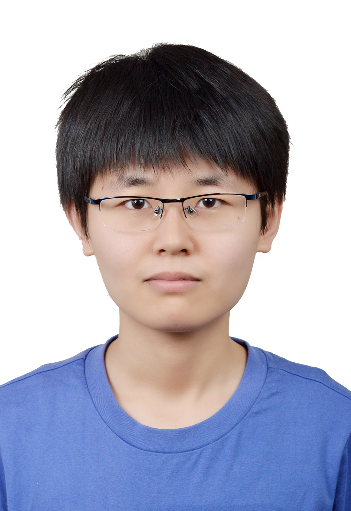

Congyue Zhang
|  |

EDUCATION
- GPA: 3.91/4.0 (2nd among 154 students)
- Major Course: Digital Circuits(100), The CAD of Electronic Circuits(99), Human Anatomy(100), Human Physiology(98), Signal and System A(96), Circuit Theory(98), Linear Algebra A(100), FPGA Experiments(96)
- Mooc: Andrew Ng's Machine Learning, Berkeley’s CS61B, Medical Neuroscience - Duke, Introduction to Power Electronics(100), Converter Circuits(98.1)
- TOEFL: 100 GRE: 152+169+4
PUBLICATIONS & PATENT
- Research on recognition technology of the laboratory test report based on Tesseract Zhang CY, Yin ZM, Sun DY, Dai W Beijing Biomedical Engineering , 2019. Published.
- An intelligent cool stick Zhang CY, Ling YX, Zhan GG, Hao JH, AN L, Zhou Y CN. Patent Publication NO. CN109327541A , filed February 2019. Patent Pending.
SELECTED RESEARCH EXPERIENCE
- To explore the role of different parameters of ultrasound in neuromodulation.
- Developing a method for automated spike sorting with machine learning modles, including spatial whitening, detection of threshold-crossing events, Principal Component Analysis and clustering based on voltage waveform shape
- Developed a novel device using standing waves as method and leech ganglion as sample.
- Data processing; Amplifier circuit design; Device improvement; Ultrasound experiment
- Intracellular electrical recording; Leech dissection
The Mechanism of Ultrasound Modulation in Neural Activity
- University-level Innovation and Entrepreneurship Training Program
- Used 805nm light to detect the change in blood flow in fingertip after cuff pressure
- Project system scheme design; Construction of hardware circuit; Data processing
Intelligent Vascular Endothelial Cell Function Detector Based on PPG
- Pre-processed the image by Ostu method.Used Hough transformation to conduct deskew and feature extraction. Post-processed by K-Means Algorithm.
Recognition technology of the laboratory test report based on Tesseract
KEY SKILLS
- Research Tool: Pclamp, Multisim, Altium, Labview, SolidWorks, Unity
- Programming Language: C, C++, C#, Python, Matlab
- DBMS: MySQL
HONORS & AWARDS
| 2nd prize, The 10th photoelectric cup, University of Shanghai for Science & Technology, 2018 |
| 3rd prize, The qualification trail of the 10th lanqiao cup software competition, University of Shanghai for Science & Technology, 2018. |
| 3rd prize, Innovation contest, School of Foundation Studies, University of Shanghai for Science & Technology, 2017 |
| 1st prize scholarship (1%), University of Shanghai for Science & Technology, 2016, 2017, 2018. |
| Shanghai Scholarship(1%), Shanghai, 2019 |
| Outstanding student (8%), University of Shanghai for Science & Technology, 2016, 2017. |
| Outstanding student Leaders, University of Shanghai for Science & Technology, 2018. |
TEACHING EXPERIENCE
| Teaching assistant,"Biomedical sensor and measurement", Prof. Zheng Zheng, 2019. |
| Teaching assistant, English, Education First, 2017. |
| Tutor, C++ and Advanced mathematics, 2018, 2019. |
| Volunteer teacher, Huji town, Shandong province, 2018. |
Activities
| Member, Psychological Association, School of Medical Instrument and food Engineering, The University of Shanghai for Science & technology, 2018. |
| Volunteer, Shanghai xinHua Hospital, 2018. |
| Volunteer, The national finals of Robotex China, 2018 |
| Volunteer, Shanghai Science& Technology Museum, 2018. |
Miscellany
Hobbies: Social psychology, TRPG, PC Games.
Last Updated by Congyue Zhang: Nov. 7 2019
You are the  th visitor.
th visitor.
th visitor.